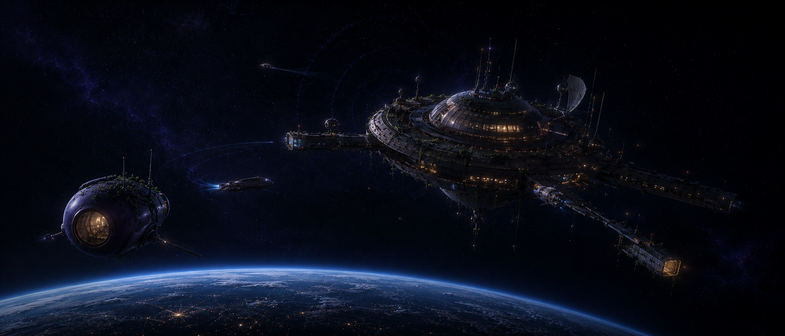

A few travellers pass through.
Move your attention across the field. The station holds position; nearby vessels answer at different depths.
pointer · parallax / click · inspect

Move your attention across the field. The station holds position; nearby vessels answer at different depths.